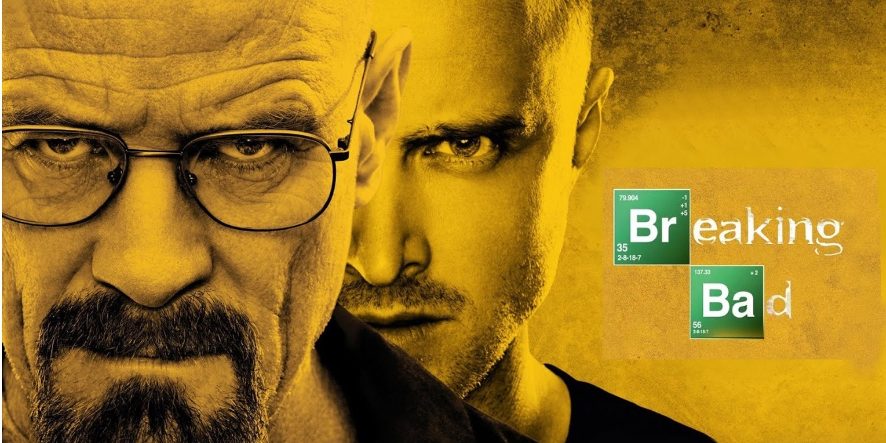
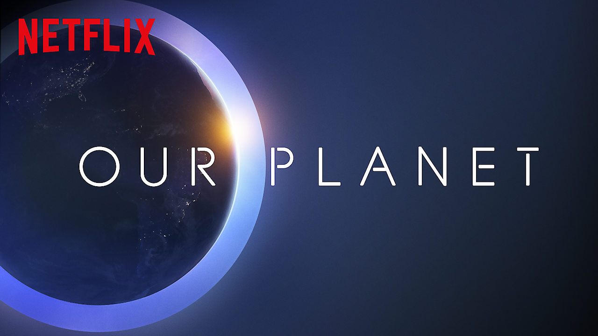
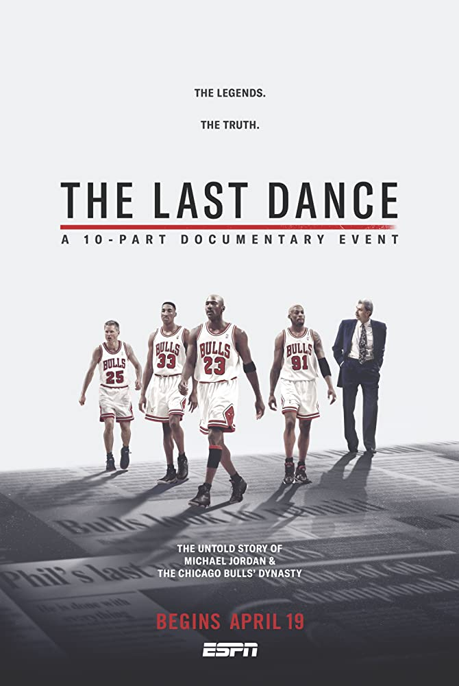
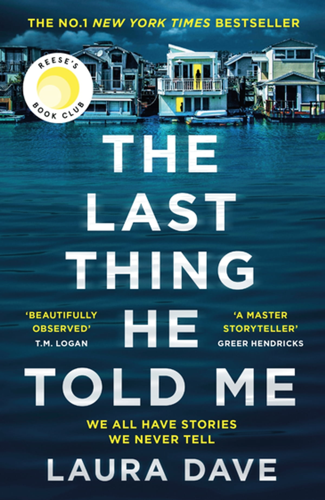
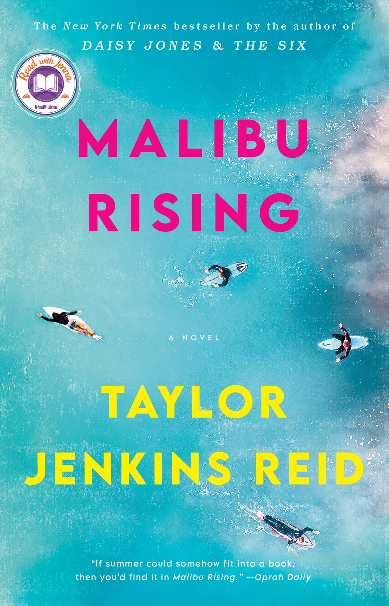

1. Ödeve geri dön!
Yardım için
Önerdiğim Diziler ve Kitaplar
Merhabalar, bugün IMBD'de ve Goodreads'da beğenilmiş kitapları inceleyeceğiz.
Kitaplar ilgini çekiyorsa seni oraya alalım
- DİZİLER
- The Breaking Bad
- Our Planet
- The Last Dance
- KİTAPLAR
- Beatiful World, Where Are You
- The Last Thing He Told Me
- Malibu Rising
Diziler ile başlayalım;
The Breaking Bad

Breaking Bad, IMDb’in gelmiş geçmiş en iyi diziler listesinde 5 numarada yer alan, 50 yaşında, Walter White adlı bir lise kimya öğretmeninin, ailesinin maddi gereksinimlerini karşılayabilmek için New Mexico’nun uyuşturucu imparatoruna evrilmesini konu alan efsane dizilerden. Karakterlerin derinliği, olay örgüsünün griftliği, sürükleyiciliği ile dizi gibi dizi. Bryan Cranston, Anna Gunn ve Aaron Paul’ün başrol aldığı dizi 5 sezon boyunca izleyene nefes aldırmıyor. Bölümler ortalama 50 dakika.
Tür: Suç, Dram
IMBD: 9.5
Our Planet

Our Planet, Planet Earth’ın yükselttiği çıtayı daha da yükseğe çıkaran, sunumunu doğa tarihçisi David Attenborough’un yaptığı doğa ve hayvan belgesel serisi. Our Planet, doğanın güzellikleri kadar dünyanın dört bir yanında insanın doğaya verdiği zararı da ele alıyor. Tek sezon ve 8 bölümden oluşuyor. Bölümler ortalama 50 dakika.
Tür: Belgesel, Doğa
IMBD: 9.3
The Last Dance

The Last Dance, efsanevi basketçi Michael Jordan’ın da forma giydiği Chicago Bulls basketbol takımının 1997-98 sezonundan yayınlanmamış görüntülerle dolu, Michael Jordan’ın hayatını ve Chicago Bulls’un diğer efsanevi oyuncularla dolu kadrosunu da arka plana alan belgesel mini dizisi. Bu projenin yıllardır yayınlanması bekleniyordu ve sonunda Netflix pandemi günlerinde olaya el atıp basketbolseverleri ve Michael Jordan hayranlarını sevindirdi. Gerçekten basketboldan anlayın veya anlamayın izleyen herkesin sevebileceği bir yapım olmuş.
Tür: Belgesel, Spor
IMBD: 9.3
Kitaplar'a da göz atalım;
Beatiful World, Where Are You

Alice, a novelist, meets Felix, who works in a warehouse, and asks him if he’d like to travel to Rome with her. In Dublin, her best friend, Eileen, is getting over a break-up and slips back into flirting with Simon, a man she has known since childhood. Alice, Felix, Eileen, and Simon are still young—but life is catching up with them. They desire each other, they delude each other, they get together, they break apart. They have sex, they worry about sex, they worry about their friendships and the world they live in. Are they standing in the last lighted room before the darkness, bearing witness to something? Will they find a way to believe in a beautiful world?
Tür: Modern Kurgu
Goodreads Linki
The Last Thing He Told Me

A mystery about a woman searching for the truth around her husband’s disappearance…at any cost.
Before Owen Michaels disappears, he manages to smuggle a note to his beloved wife of one year: Protect her. Despite her confusion and fear, Hannah Hall knows exactly to whom the note refers: Owen’s sixteen-year-old daughter, Bailey. Bailey, who lost her mother tragically as a child. Bailey, who wants absolutely nothing to do with her new stepmother.
Tür: Gizem, Kurgu
Goodreads Linki
Malibu Rising

Malibu: August 1983. It’s the day of Nina Riva’s annual end-of-summer party, and anticipation is at a fever pitch. Everyone wants to be around the famous Rivas: Nina, the talented surfer and supermodel; brothers Jay and Hud, one a championship surfer, the other a renowned photographer; and their adored baby sister, Kit. Together, the siblings are a source of fascination in Malibu and the world over—especially as the offspring of the legendary singer Mick Riva.
Tür: Tarihi Kurgu, Roman
Goodreads Linki